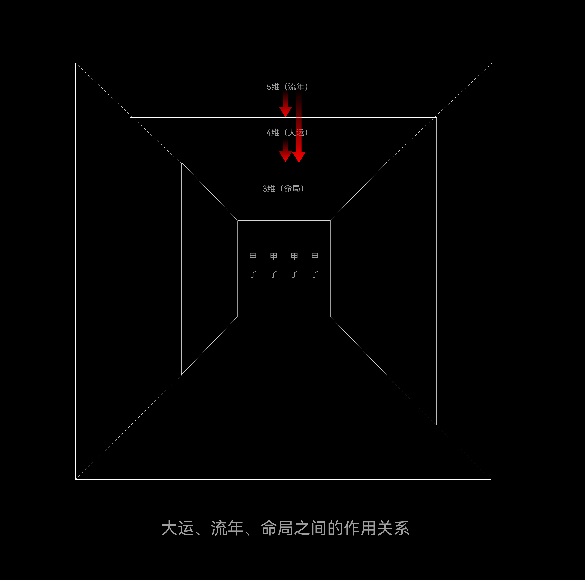

Ch 4: Luck Cycles & Annual Influence
The natal chart is your terrain. Luck Cycles are the weather. Annual Influences are specific storms and sunshine. This chapter explains how time interacts with your birth chart.
The Critical Interaction Rule
Before anything else, memorize this hierarchy:
- The Annual Influence (流年) can affect both the Luck Cycle and the Natal Chart.
- The Luck Cycle (大运) can affect the Natal Chart.
- The Natal Chart cannot affect the Luck Cycle or Annual Influence.
- The Luck Cycle cannot affect the Annual Influence.
Information flows in one direction: from the most temporary (year) through the intermediate (decade) to the most permanent (birth). This hierarchy is fundamental — violating it leads to incorrect readings.
4.1 The Natal Chart (Ming Ju) — Your Terrain
People are born into a three-dimensional space. The first breath you take forms your natal chart — your inherent "climate." Some people are born heat-sensitive: they turn on the AC before summer even starts. Others are cold-sensitive: their hands and feet never warm up in winter. Some break out in rashes the moment it gets hot.
This is your natal chart at work. It represents two things simultaneously:
- Quality (质): Your physical constitution — hot, cold, damp, dry, balanced. This is the tangible, material aspect.
- Energy (气): Your vitality patterns — some people need 10 hours of sleep and still feel groggy; others thrive on 5 hours and boundless energy. This is the intangible, energetic aspect — what we commonly call "strong" or "weak."
Crucially, being "strong" or "weak" has no direct correlation with wealth, success, or happiness. It describes your constitution, not your destiny.
4.2 The Luck Cycle (Da Yun) — Your Decade
If we're born into three-dimensional space, what governs our life trajectory? Not gods or immortals — it's natural law. Each person's Luck Cycles are the manifestation of natural patterns across their lifespan. Think of them as a fourth-dimensional force that overlays your three-dimensional birth chart.
Each Luck Cycle sets a 10-year tone — a prevailing energy environment with its own temperature: cold, hot, damp, dry, or balanced. It interacts with your natal chart, producing either beneficial or harmful effects depending on what your chart needs. Some decades feel like spring — everything grows. Others feel like winter — conservation and endurance.
For a comprehensive guide to understanding your own Luck Cycles, including calculation methods and real-life examples, read our article: "BaZi 10-Year Luck Cycles (Da Yun) — A Complete Guide" →
4.3 The Annual Influence (Liu Nian) — Your Year
The Annual Influence is like a fifth-dimensional force. It can travel freely through both three-dimensional (natal) and four-dimensional (Luck Cycle) space, amplifying or diminishing the decade's energy at will.
Think of it as a switch: it doesn't change the circuit, but when it connects, current flows and results appear. Or think of it as sunlight: its rays pass through thick clouds (a bad Luck Cycle) or thin clouds (a good Luck Cycle) and hit the ground (your natal chart). The ground's appearance depends entirely on what kind of clouds the sunlight had to pass through.
4.4 Reading Luck Cycles — Four Principles
A good Luck Cycle helps your chart function better. Here are the four patterns that make a decade favorable:
- Brings what the chart wants. Your Favorable Element arrives — direct benefit, like rain on thirsty soil.
- Suppresses the chart's enemy. The Luck Cycle controls or weakens your most problematic element — indirect benefit, like removing a weed from a garden.
- Transforms unfavorable into favorable. Through combinations, the Luck Cycle changes an enemy element into a neutral or friendly one — advanced, but powerful.
- Idle element becomes favorable. A previously neutral element in your chart shifts into a supportive role due to the Luck Cycle's influence.
Bad Luck Cycles are the reverse: they bring unwanted elements, weaken favorable ones, strengthen enemies, or transform friends into foes.
Feeling stuck in a bad cycle? Many people wonder why life feels harder during certain periods. Our article "Why Am I Depressed? BaZi Cycles & 10-Year Luck Periods Explained" → explores this from both a metaphysical and practical perspective.
| Year | Month | Day | Hour |
|---|---|---|---|
| [ Example to be added ] | |||
4.5 Reading Annual Influences — The Trigger Mechanism
The reading method is fundamentally the same as Luck Cycles, but now you're working with 12 characters instead of 10 — the natal chart (8) + Luck Cycle (2) + Annual Influence (2). The relationships become more complex.
Key principles:
- Theoretically, the Heavenly Stem and Earthly Branch of a Luck Cycle each govern 5 years. But always read the stem-branch pair as a whole first, then analyze each individually. The whole picture takes priority — you need to assess which of the two is stronger to understand its effect on the overall chart.
- Example: Wu Earth Day Master, weak, fears Killings. Running Jia-Shen (Wood-Metal) Luck Cycle: Jia Wood is "legless" because Shen Metal cuts it at the root. Weak Jia = minimal threat. The Killings still arrive but lack the power to do real damage.
To see how Annual Influences play out in real celebrity charts, check out our case studies: Elon Musk's BaZi decoded → and Trump's Fire-Earth chart →.
4.6 Trigger Timing (Ying Qi) — The Critical Concept
The Annual Influence governs timing — the specific moment when events manifest.
Being in a bad Luck Cycle doesn't mean every year within that decade is bad. The Luck Cycle creates the conditions — the road becomes rough — but specific events require the Annual Influence to trigger them.
The analogy: A car driving on a dirt road during a bad decade. The road is rough (unfavorable conditions), but the car can still drive. It just needs to be careful. A specific pothole (an unfavorable Annual Influence) might cause a breakdown — but if the road is smooth enough, the car passes through without incident. Conversely, even within a bad decade, a favorable Annual Influence year can still bring positive events — though the positive effect is discounted compared to the same year in a good decade.
| Year | Month | Day | Hour |
|---|---|---|---|
| [ Example to be added ] | |||
第4章：大運流年
重點：先說清楚大運流年和原局的關係，流年可以作用大運和原局；大運可以作用原局；原局不能反向作用大運和流年，同樣大運也不能作用於流年。
命局是什麼？
人稟氣而生，出生在一個三維的空間。我們出生呼吸的第一口氣就形成了我們的命局，這個命局是什麼？他代表的是一種先天環境，比如是寒，燥，溼，熱，中和。有人天生比別人怕熱，還沒入夏就早早的把空調打開，不然睡不着；還有的人特別怕冷，冬天手腳怎麼也捂不熱；還有的人夏天一熱渾身就癢，
長癤子或者痱子等等，具體來說造成這種原因的是因爲八個字的環境所致，也同時代表質的體現；另外還有氣的體現，比如有的人天生覺多，記憶力差，而有的人天生覺少，精力充沛，這種現象反饋到命局中的體現就是經常說的身強和身弱的表現，當然了身強和身弱和窮通富貴沒有必然關係。
大運是什麼？
人出生在三維空間，那麼到底是掌控着人生的大趨勢，是神還是仙？都不是，其實是大自然規律，每個人所經歷的大運就是自然規律在人生上的體現，我們可以把它稱之爲四維力量，同樣四維也有寒，燥，溼，熱，中和這些能量環境，它是給這十年來定一個基調。它可以對命局產生好的作用，當然也可能以產生壞的作用，全憑配合需要。
流年是什麼？
流年就好比五維的力量，它可以任意穿梭三維和四維的空間，任意增強或者減弱四維空間的能量；同時它又好比一個開關，接通的那一刻就能產生相應的結果；又好比太陽，它的光芒像是穿過厚厚烏雲或者穿過白雲（大運的環境）直射在大地上（命局），大地呈現出來的感官是不一樣的。
示意圖：

4.1.大運解讀
前面主要在講讀盤，因爲只要讀懂了盤你才能判斷大運的好壞。但是相對會稍微複雜一些，因爲從八個字變成了十個字，先說基礎的解讀
a：原局喜什麼來什麼，或者來幫扶喜用神的
b：剋制原局忌神的
c：化原局忌神爲喜神的
d：閒神（前面有提到概念）變喜神
以上都是好的大運，那麼什麼是壞的大運呢？根據上面反着來就是壞的。
4.2.流年解讀
想全面了解如何解讀自己的大運，包括計算方法和實際案例，閱讀：「八字十年大運 — 完整指南」→
和大運的解讀基本一致，十個字變成十二個字，關係變的更加錯綜複雜，這裏需要注意的是大運一步管十年，理論上來說天干和地支各管五年，但是干支首先要整體先看，方可在單獨看，整體看是要區分出天干的力量大小以至於對全局的作用。比如戊土日主身弱忌官殺，運行甲申大運，此時甲被申金截腳，甲木無力所以危害不大。
另外，流年主應期，就是說日主走到一步差運中並不是說這十年中都是差的，這時需要流年來引動才能應驗，就好比一輛轎車走到了土路突然在來一個坑窪才能拋錨，若無坑窪也能正常行駛無非就是慢點。但同時雖大運差但流年有幫扶仍可有喜事發生，只不過力量會有折扣。
覺得自己卡在壓運中？我們的文章「爲什麼我總是心情低落？八字大運解讀」→從玄學和實用兩個角度探討這個問題。